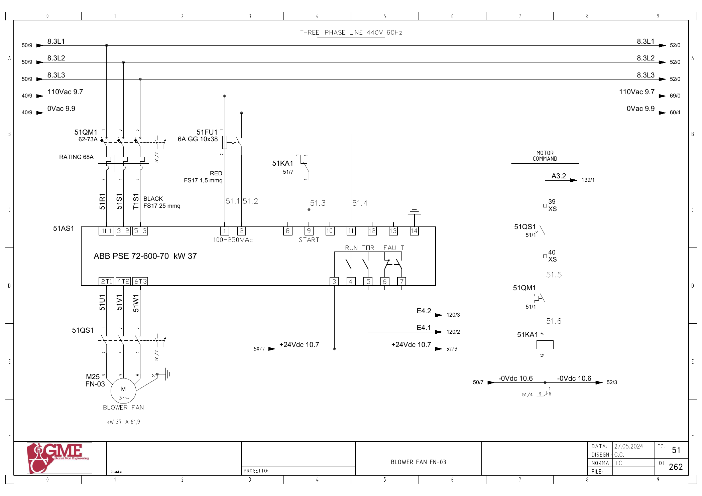

FN03 · 연소 공기 블로어 전기 회로 추적
1. 도면의 구성과 진단 경계
FG51: M25 FN-03(도면37kW·61.9A), 51AS1 ABB PSE72-600-70 소프트스타터와51QM1·51QS1. 인버터 방식과 구분합니다.
PLC fn03_fbk(E4.1)는 도면의 TOR 단자5에 연결됩니다. RUN 단자4는 이 도면에서 입력 연결이 표시되지 않습니다. 기동 명령과 TOR 상태를 분리합니다.
추가 시공도면 · 접속함·케이블·배관 경로 — 승인·현재 설치는 확인 전입니다.
2. 소프트스타터 기동
A3.2 ↔ 백업 %Q3.2 / start fn03 · FG51 · PDF 52
- A3.2 (FG139/1)
- XS:39 → 51QS1 보조접점 → XS:40
- 51QM1 보조접점
- 51KA1 코일 A1→A2 / 0Vdc10.6
- 51AS1 단자8/9 START ↔ 51KA1 접점1→9
전달·사용 위치: 별도 제어 전원:110Vac9.7 → 51FU1(6A GG10×38) → 51AS1 단자1, 단자2→0Vac9.9. 원본1954의 요청·1801의 감시와 연결합니다.
원본 심볼 직접 참조: 1801 / allarms 1 / ORef 45 · 1801 / allarms 1 / ORef 57 · 1801 / allarms 1 / ORef 866 · 1954 / motors 1 / ORef 754
3. 피드백으로 쓰는 TOR
E4.1 ↔ 백업 %I4.1 / fn03_fbk · FG51 · PDF 52
- +24Vdc10.7 → 51AS1 단자3
- TOR 접점 단자5 → E4.1
- FG120/2 PLC 입력 참조
전달·사용 위치: 백업은 feedback motor fn-03, 도면은 TOR입니다. 원본1801·1866의 내부 FN03 Run과 실제 전달·펄스 처리를 확인합니다.
원본 심볼 직접 참조: 1031 / time work motor / ORef 1828
4. 소프트스타터 이상
E4.2 ↔ 백업 %I4.2 / fn03_all_softstarter · FG51 · PDF 52
- +24Vdc10.7 → 51AS1 단자3
- FAULT 접점 단자6 → E4.2
- FG120/3 PLC 입력 참조
전달·사용 위치: 소프트스타터 고장 입력의 내부 전달, FN03 고장 래치·버너 허가 영향과 연결합니다.
원본 심볼 직접 참조: 복원 LAD에서 이 이름의 직접 참조는 찾지 못했습니다. 내부 Inputs 등의 별도 전달·미해석 참조·현재 프로그램은 확인 전입니다.
위 직접 참조는 복원 원본의 같은 심볼명 위치입니다. 읽기·쓰기 역할, 현재 호출, 현장 사용을 함께 확정한 표는 아닙니다. 원본의 simulation 블록 참조가 있더라도 이번 작업에서 가상 실행·개발·시험은 진행하지 않았습니다.
원본 PLC와 연결
남은 확인과 기록
- PSE 모델·TOR/RUN/FAULT 설정·실제 입력 전달 확인
- Tag66 SD 두 곳과 PContact의 TIA 실행·감시 시작 시점 확인
- 팬 운전 응답과 버너 허가를 승인된 실제 운전 순서로 대조
도면을 함께 확인
FG 51 · 해당 도면 보기

| 기록 항목 | 내용 |
|---|---|
| 현장 식별 | 설비 ID / 반·단자대 / 모터·인버터 명판 / 도면 개정 |
| 신호 구간 | PLC 명령 / 단자 / 직렬 접점 / 릴레이 / DI / 응답 접점 / 입력 / 내부 DB |
| 관찰 결과 | 시각 / 운전 모드 / 기준값의 근거 / 관찰값 / 최초 불일치 구간 |
| 복구 확인 | 원인·조치 / 원인 해제 / Reset / 재요청 / 주변 설비 영향 |